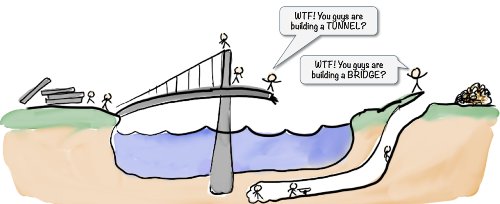
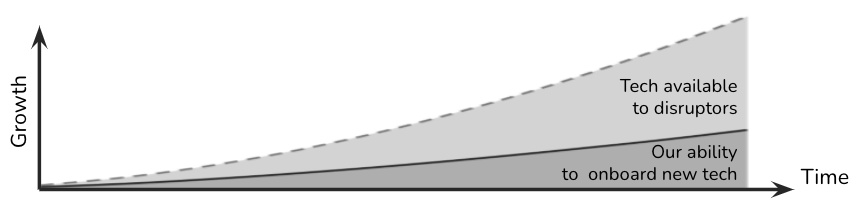

Value of Grounded Architecture
KEY POINTS:
- When Grounded Architecture is in place, it can have a significant positive impact on the functioning of an organization.
- These categories of impact are: Executing At Scale, Increasing the Quality of Decision-Making with Data, Maximizing Organizational Alignment & Learning, Higher Adaptivity.
When Grounded Architecture is in place, it can have a significant positive impact on the functioning of an organization:
- Enable Execution of Architecture Function At Scale,
- Increase the Quality of Decision-Making with Data,
- Maximize Organizational Alignment,
- Maximize Organizational Learning, and
- Increase Architecture Function Adaptivity,
The following sections elaborate on these categories in line with the goals.
Executing at Scale
Grounded Architecture aims to enable architecture functions to operate at scale efficiently. We must rely on something other than intuition and manual processes when supporting thousands of developers and dealing with hundreds of millions of lines of code.
The architecture data pillar aims to support working at scale with automation and self-service. Our People Pillar aims to help execution at scale by developing connections at all levels of the organization, increasing transparency, and through a strong network speeding up alignment and the execution of shared decisions.
Increasing the Quality of Decision-Making with Data
“If we have data, let’s look at data. If all we have are opinions, let’s go with mine.” -— Jim Barksdale
Architectural discussions can be very heated and opinionated. There are significant benefits to making our decision process as much as possible data-driven. It is one of the critical tasks for any architect to maintain high-quality data on relevant internal and external technology developments, providing fuel for data-informed discussions and decision-making.

The Data Pillar enables architects to move away from opinion-based decisions to data-driven economic risk modeling to become more data-driven. Such frameworks can help architects to achieve the following (credit Gregor Hohpe):
- dismantle the buzzwords, present the problem in clear terms, understandable to a broader audience
- identify the real drivers behind buzzwords based on internal and external research
- bring data into the discussion
- translate drivers into an economic risk model, and use the model and data to find the best spot for the given business context
Maximizing Organizational Alignment
Misalignment frequently happens in big organizations. The Data Pillar can increase organizational alignment by creating transparency. The People Pillar develops global structures that can help people before and after they make an architectural decision:
- Before people decide, people starting to work simultaneously on the same topics can decide to work together, minimize effort duplication, and in that way, save time and resources.
- After making a decision, Grounded Architecture can make all organizations aware of it and distribute it so everyone can profit from lessons learned in one unit.

Maximizing Organizational Learning
“Good judgment comes from experience, and experience comes from bad judgment.” – Fred Brooks
” I expect you to learn to be better each day. I challenge you to look at each working day as an opportunity to learn more, and by doing so, to grow as a person.” – L. David Marquet
When we have teams of well-connected architects and other stakeholders, such groups can transform individual experiences into collective knowledge to benefit the whole organization.
One of architects’ primary daily tasks is learning. We must discover new things about our domain, teams, tools, and technologies. As individual architects, we need to use each day to learn something new. We must maximize personal learning, transforming individual lessons learned into shared guidelines.
One of the problems I frequently see in organizations, particularly complex and international ones, is that they may need more natural spaces for group knowledge sharing. Consequently, the People Pillar aims at creating spaces for sharing knowledge about architecture and technology. These spaces include but are not limited to regular update calls, knowledge-sharing sessions, or conferences.
In addition to creating spaces, as a community, we can further increase our learning value by deriving generalized insights from cross-group cases.
Lastly, one of the problems many organizations face is that due to their complexity and size, they have more challenges in introducing new technologies than their disruptors (Figure 3).
 Figure 3: One crucial aspect of Architects’ work is following external trends and finding pragmatic ways to introduce these trends in the organization. Credit: thoughtworks.com/insights/blog/whats-hurry-building-digital-enterprise
We need more time to understand and utilize new technology developments while the number of new technologies is increasing due to, e.g., the continuous and accelerating evolution of cloud and mobile products. As architects, we must proactively identify relevant new technology developments. Based on our understanding of these developments, we must create pragmatic technology recommendations for concrete platforms across the organization.
The grounded architecture aims to accelerate the adoption of new technology and quick learning by providing more data to facilitate reflection and better connecting people to leverage each other’s explorations.
Adaptivity
The three elements of the grounded Architecture model, data, people, and strategy/governance platforms, provide a highly flexible and adaptive setting.
This adaptivity is driven by the independence of elements and the possibility of using the elements in different combinations. Here are some of the critical drivers of flexibility:
- The data pillar, if implemented with a high level of automation, allows for quick extensions and reconfigurations to provide data for any change of direction. Extending the platform with new data should be easy after acquisitions or mergers. And the ability to group data at multiple levels supported the what-if scenario analysis (e.g., the impact of different reorganization scenarios). It defined a baseline to track changes in the organization.
- A strong data pillar provides crucial connections and feedback on the daily reality of each part of the organization.
- Grounding the architecture with data and people connections also makes the work of a Chief Architect much more flexible. As most architectural decisions can be delegated to well-aligned teams, a Chief Architect, typically the most experienced technologist, can spend more time on crucial strategic initiatives, such as defining cloud, data, or platform strategies or supporting decisions on mergers and acquisitions.
- Lastly, the structure of our architectural model enables a more sustainable architectural function. With an established Data Pillar and a well-connected architect, the architecture can still benefit the organization even without a strong central team.
Structure ← Architecture Activities Platform |
Being Architect Being Architect → |